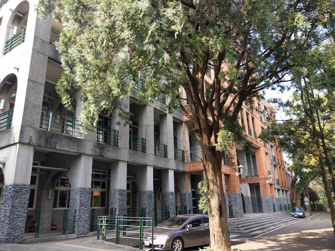
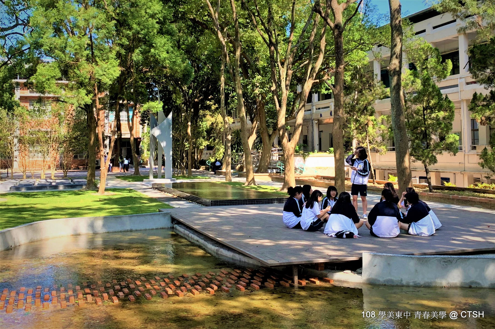
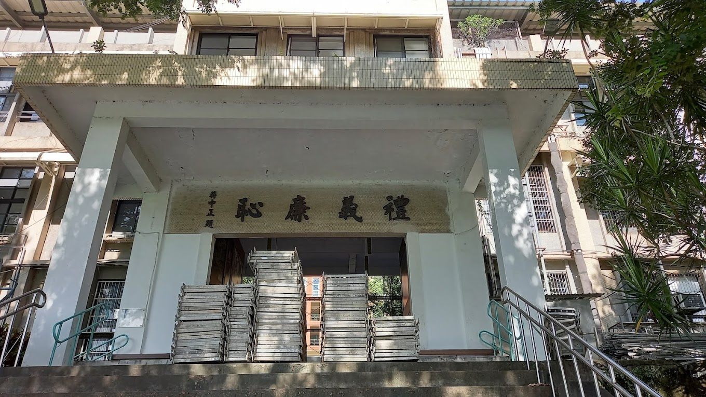
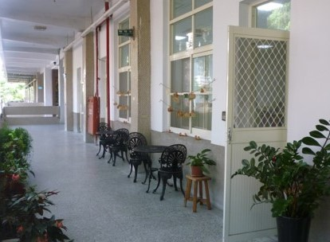
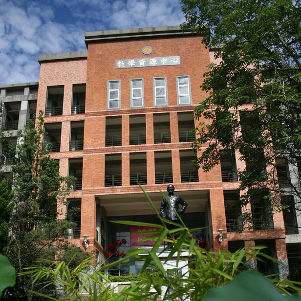
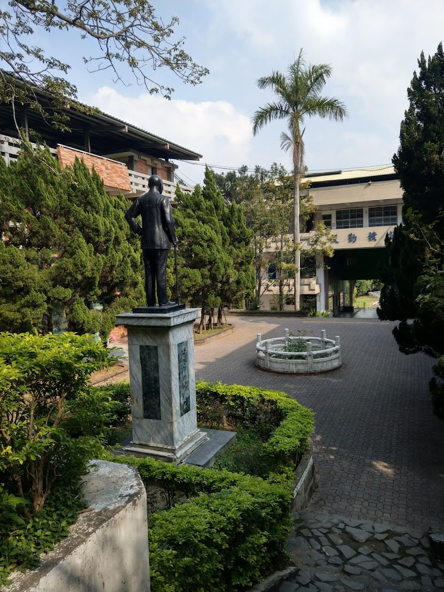
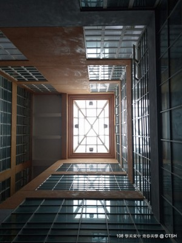
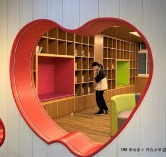

行政單位
校長室

校長： 彭德和
學歷：
玄奘大學中國文學研究所碩士
經歷：
導師、訓育組長、衛生組長、註冊組長、教學組長、圖書館主任、國文科召集人、教務主任、秘書、代理校長
教務處

教務處：負責課程教學、學籍管理、實驗研究與教學設備等業務及其有關事項。
教務處聯絡電話 ：03-6211166、03-5962024
傳真：(03)5941551
組別：教學組，註冊組，設備組，實驗研究組，課程諮詢
學務處

學務處：負責學生活動、生活輔導、生活教育、衛生保健及體育活動等業務及其有關事項。
學務處聯絡電話: 03-6211166、03-5962024
傳真：(03)5100079
組別：教官室，訓育組，衛生組，體育組，社團活動組，生活輔導組
總務處

總務處：學校設施設備維修管理、校舍及財產管理、環境綠美化、公文及檔案管理、全校各項出納業務及其有關事項。
總務處聯絡電話:03-6211166、03-5962024
傳真：03-5944069
組別：庶務組，文書組，出納組
輔導處

輔導處：負責個別諮商、團體輔導、心理測驗、活動研習，輔導刊物，升學資訊，諮詢轉介，各項輔導工作推展
輔導處分機:600~604
傳真:03-5942428
親職諮詢專線：03-5945998
圖書館

圖書館：本校圖書館的主要任務， 在於搜集、分析、整理、運用圖書資訊，以支援教學與研究，培養獨力學習繼續教育自己的觀念，並提昇使用媒體資源、資訊科技的涵養，以適應時代的需要。
圖書館分機:610~612
傳真：03-5959516
人事室

人事室：人事室:負責辦理人事管理事項
人事室分機:700~702
傳真：03-5940959
主計室

主計室：辦理年度概預算之籌編、收入支出經費內部控制與審核及會計帳務之處理等業務
主計室分機:710，712
傳真：03-5944069
教官室
教官室:交通安全教育、 全民國防教育、學生獎懲、改過銷過暨知生識生等業務。
進修部

進修部:溯自政府實施九年國民義務教育之後，為延長社會教育功能，鼓勵在職青年進修，俾能發揮終身學習效益，公私立國、高中紛紛申請附設補習學校（即前之「進修學校」，今之「進修部」。
進修部專線：03-5940943 (上班時間:14:00至22:00；寒暑假 8:00至16:30)
傳真: 03-5953893